SY8286ARAC
DC-DC 穩壓器 DC-DC regulator
23 V · 6 A · QFN 3×3-20
提供料號紀錄與技術資料判讀指引，協助更清楚地辨識零件、核對規格及整理採購需求。
業務涵蓋電源 IC、MOSFET 與電晶體、二極體、電感磁性元件、LED 光電元件與自恢復保險絲。下列為欣緯經手的 337 項料號，每一項都附封裝 3D 示意；實際規格與供應條件以後續確認為準，不代表現貨或正式報價。
DC-DC 穩壓器 DC-DC regulator
23 V · 6 A · QFN 3×3-20
DC-DC 穩壓器 DC-DC regulator
REG. DC-DC 23V 8A QFN3*3-20
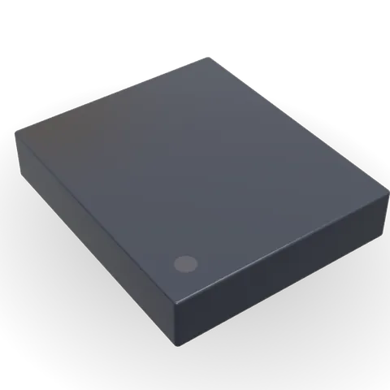
DC-DC 穩壓器 DC-DC regulator
REG DC-DC 6A CSP-20
DC-DC 穩壓器 DC-DC regulator
REG DC-DC 6A CSP-20
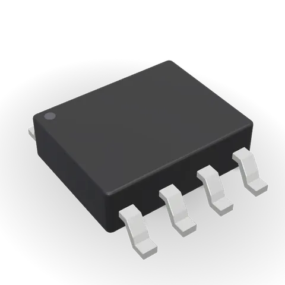
DC-DC 轉換器 DC-DC converter
DC-DC CONVERTER SOP-8
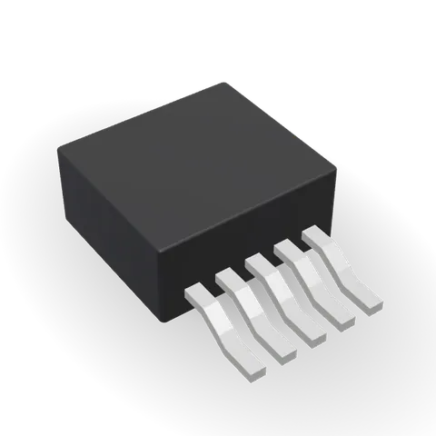
DC-DC 轉換器 DC-DC converter
150KHZ FIX 5V TO263-5 DC-DC
DC-DC 轉換器 DC-DC converter
2A 350KHZ SOP-8 DC-DC
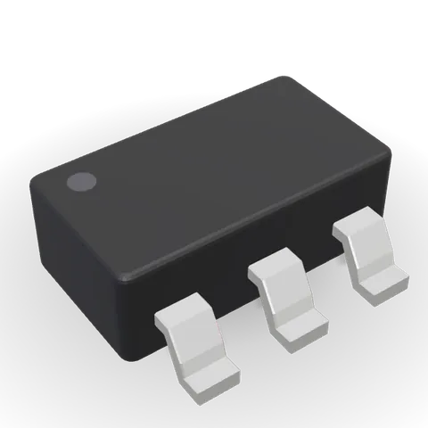
DC-DC 轉換器 DC-DC converter
24V 1.5A SOT-26 DC-DC
DC-DC 轉換器 DC-DC converter
150KHz TO-263-5 DC-DC Converter
DC-DC 轉換器 DC-DC converter
150KHZ 3A TO-263 ADJ · TO-263-5
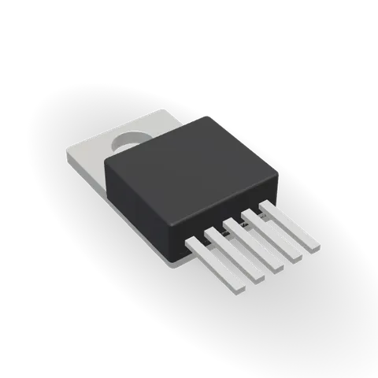
DC-DC 轉換器 DC-DC converter
DC-DC CONVERTER TO220 · TO-220-5
DC-DC 轉換器 DC-DC converter
28V 2A SOT23-6

DC-DC 轉換器 DC-DC converter
40V PSOP-8 DC-DC
DC-DC 轉換器 DC-DC converter
3A DC-DC PSOP-8

DC-DC 轉換器 DC-DC converter
1 A · SOT-25
DC-DC 轉換器 DC-DC converter
2A SOT23-6 DC-DC
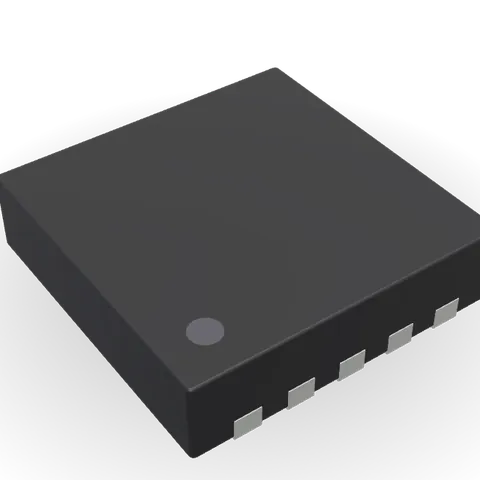
DC-DC 轉換器 DC-DC converter
3A DFN3*3-10 DC-DC
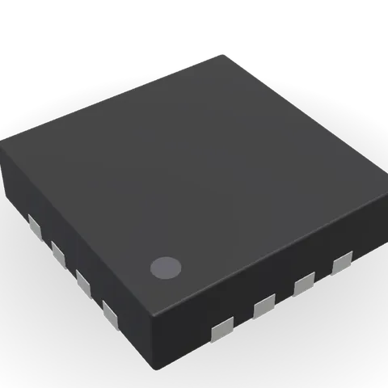
DC-DC 轉換器 DC-DC converter
3A QFN3*3-16 DC-DC Converter
DC-DC 轉換器 DC-DC converter
4A DFN3*3-10 DC-DC
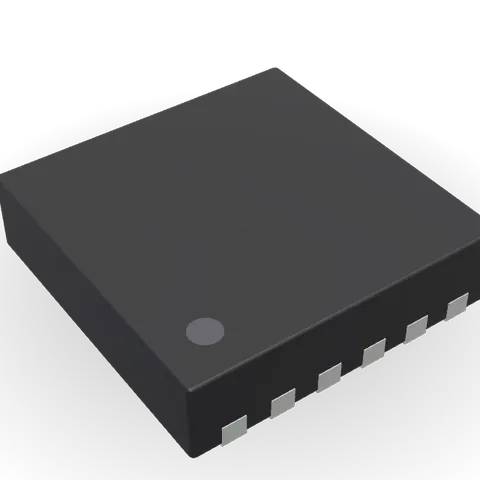
DC-DC 轉換器 DC-DC converter
Dual CH DFN3*3-12L DC-DC
DC-DC 轉換器 DC-DC converter
DC-DC SOP-8
DC-DC 轉換器 DC-DC converter
2A SOT-23-6 DC-DC
DC-DC 轉換器 DC-DC converter
DC-DC 4A QFN16
DC-DC 轉換器 DC-DC converter
3.5A DFN3*3-10
DC-DC 轉換器 DC-DC converter
2A SOT-25 DC-DC
DC-DC 轉換器 DC-DC converter
Vmax 30V 4A SOP-8 DC-DC
DC-DC 轉換器 DC-DC converter
Vmax 40V SOT-26 DC-DC
DC-DC 轉換器 DC-DC converter
Vmax 40V 2A SOT23-6 DC-DC
DC-DC 轉換器 DC-DC converter
Vmax 40V 1A SOT23-6 DC-DC
DC-DC 轉換器 DC-DC converter
55V SOT26 DC-DC
升壓轉換器 Boost converter
Step-up SOT-26 DC-DC
升壓轉換器 Boost converter
Boost SOT-26 DC-DC Converter
升壓轉換器 Boost converter
Boost DC-DC Converter SOT-25 · SOT-23-6
升壓轉換器 Boost converter
2A Boost DC-DC SOT23-6
升壓轉換器 Boost converter
IC REG. Boost 1MHz SOT23-6
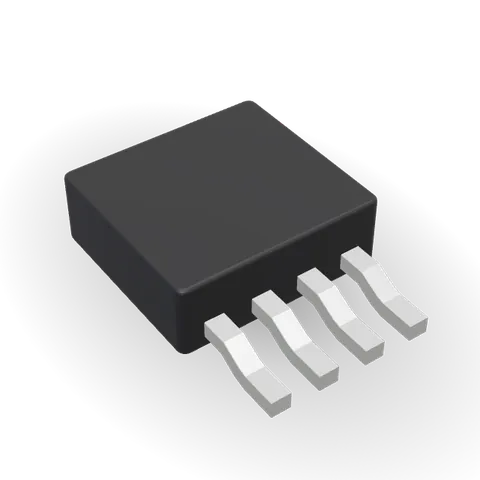
LDO 穩壓器 LDO regulator
TO-252-4 LDO
LDO 穩壓器 LDO regulator
FIX 5.0V SOT-25 LDO
LDO 穩壓器 LDO regulator
300mA SOT-25 FIX1.5V LDO
LDO 穩壓器 LDO regulator
FIX 1.8V SOT-25 LDO
LDO 穩壓器 LDO regulator
FIX 2.7V SOT-25 LDO
LDO 穩壓器 LDO regulator
300mA SOT-25 FIX3.0V LDO
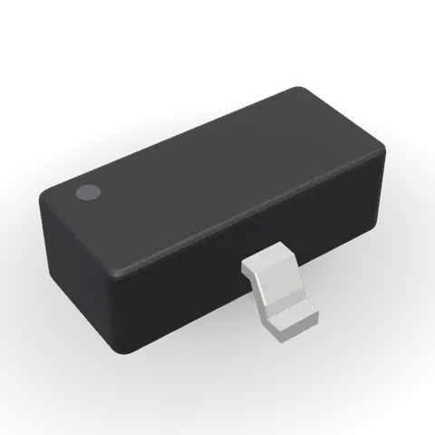
LDO 穩壓器 LDO regulator
300mA SOT-23 3.3V LDO
LDO 穩壓器 LDO regulator
FIX 3.3V SOT-25 LDO
LDO 穩壓器 LDO regulator
FIX 1.8V SOT-25 LDO
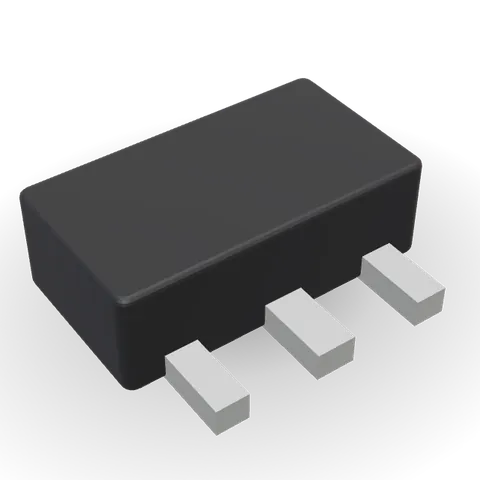
LDO 穩壓器 LDO regulator
0.1A FIX 5V SOT-89 LDO
LDO 穩壓器 LDO regulator
0.1A SOT-89 FIX 5V LDO
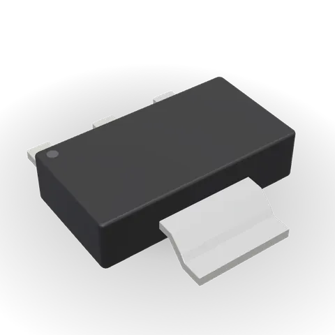
LDO 穩壓器 LDO regulator
1A FIX 1.2V SOT-223 LDO
LDO 穩壓器 LDO regulator
1A SOT-223 FIX 3.3V LDO
LDO 穩壓器 LDO regulator
1A ADJ SOT-223 LDO
LDO 穩壓器 LDO regulator
FIX 3.3V SOT-25 LDO
LDO 穩壓器 LDO regulator
FIX 3.3V SOT-25 LDO
LDO 穩壓器 LDO regulator
FIX 5.0V SOT-25 LDO
LDO 穩壓器 LDO regulator
150mA SOT-25 LDO
LDO 穩壓器 LDO regulator
0.3A FIX 3.3V SOT23
LDO 穩壓器 LDO regulator
FIX 1.2V SOT-25 LDO
LDO 穩壓器 LDO regulator
FIX 3.3V SOT-25 LDO
LDO 穩壓器 LDO regulator
300mA 3.0V SOT-89 LDO
LDO 穩壓器 LDO regulator
0.3A FIX 1.2V SOT-23 LDO
LDO 穩壓器 LDO regulator
300mA FIX 2.5V SOT-23 LDO
LDO 穩壓器 LDO regulator
300mA 3.3V SOT-23 LDO
LDO 穩壓器 LDO regulator
0.5A SOT-25 ADJ LDO
LDO 穩壓器 LDO regulator
600mA SOT-23-5 ADJ LDO
LDO 穩壓器 LDO regulator
0.6A SOT-89 LDO
LDO 穩壓器 LDO regulator
0.6A SOT-89 LDO
LDO 穩壓器 LDO regulator
0.3A SOT-89 LDO
LDO 穩壓器 LDO regulator
0.3A FIX 5.0V SOT-89 LDO
LDO 穩壓器 LDO regulator
FIX 3.3V SOT-23 LDO
LDO 穩壓器 LDO regulator
REG. LDO FIX 5.0V SOT23-5
LDO 穩壓器 LDO regulator
0.3A SOT-25 LDO
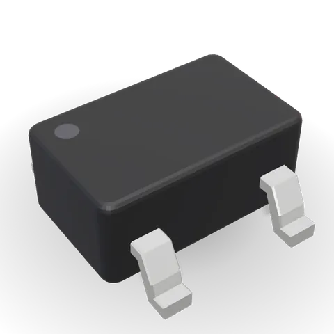
LDO 穩壓器 LDO regulator
FIX 1.8V SC70-5 LDO
LDO 穩壓器 LDO regulator
300mA FIX3.3V SC70-5 LDO
電源開關 Power switch
USB POWER S/W SOP-8
電源開關 Power switch
2A Current Limited SOT23-6
電源開關 Power switch
2.4–5.5 V · 2 A · SOT-23-5 · LF
鋰電池充電 IC Li-ion charger
800mA SOT23-5 Charger
鋰電池充電 IC Li-ion charger
Li-ion Battery Charger ESOP-8
鋰電池充電 IC Li-ion charger
500mA 4.2V Battery Charger SOT25
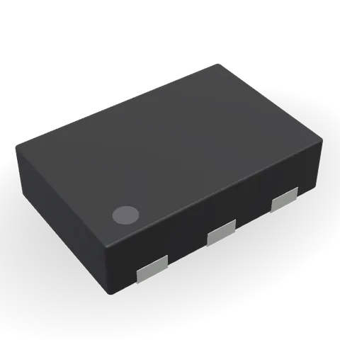
電池保護 IC Battery protection
Battery Protection DFN6 (2*3)
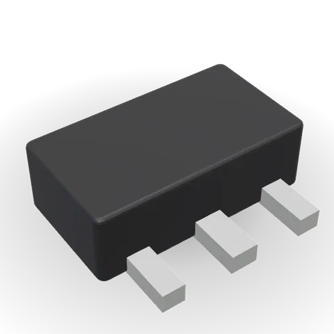
LED 驅動 IC LED driver
40V SOT-89-5 LED Driver
LED 驅動 IC LED driver
LED Driver SOP-8
LED 驅動 IC LED driver
600V 1A SOP-8 LED Driver
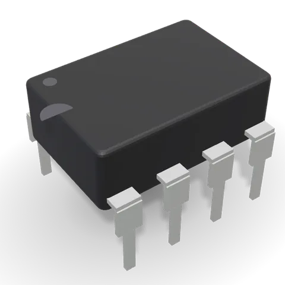
PWM 控制器 AC-DC PWM controller
AC-DC PWM Controller DIP8
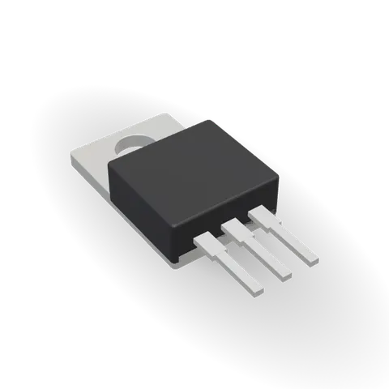
N 通道 MOSFET N-channel MOSFET
100V N-CH Mosfet TO-220
N 通道 MOSFET N-channel MOSFET
N-CH Mosfet SOT-23
N 通道 MOSFET N-channel MOSFET
30V N-CH SOP8 Mosfet
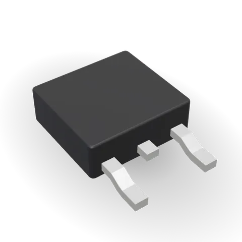
N 通道 MOSFET N-channel MOSFET
N-CH 80V TO-252 Mosfet
N 通道 MOSFET N-channel MOSFET
N-CH 60V TO-252 Mosfet
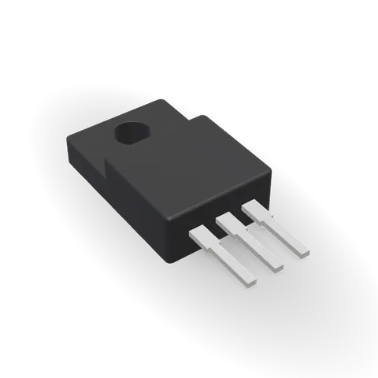
N 通道 MOSFET N-channel MOSFET
7A 650V TO-220F N-CH Mosfet
N 通道 MOSFET N-channel MOSFET
600V 7.5A TO-220F
N 通道 MOSFET N-channel MOSFET
650V 10A TO-220F
N 通道 MOSFET N-channel MOSFET
600V 12A TO-220F
N 通道 MOSFET N-channel MOSFET
N-CH SOT-23 Mosfet
N 通道 MOSFET N-channel MOSFET
N-CH 500V 7.5A TO-252 Mosfet
N 通道 MOSFET N-channel MOSFET
60V 118A TO-252 Mosfet
N 通道 MOSFET N-channel MOSFET
N-CH TO252 Mosfet
N 通道 MOSFET N-channel MOSFET
60V 76A Mosfet · TO-252
N 通道 MOSFET N-channel MOSFET
30V SOT-23 Mosfet
N 通道 MOSFET N-channel MOSFET
N-CH SOT23 Mosfet
N 通道 MOSFET N-channel MOSFET
N-CH SOT-23 Mosfet
N 通道 MOSFET N-channel MOSFET
N-CH SOT-23 Mosfet
N 通道 MOSFET N-channel MOSFET
20V N-CH SOT-23 Mosfet
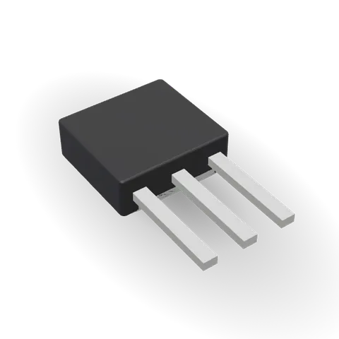
N 通道 MOSFET N-channel MOSFET
600V 4A N-CH TO-251 Mosfet
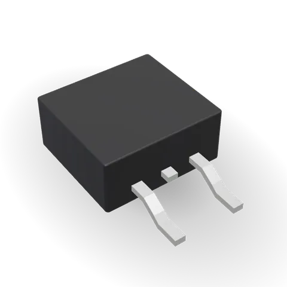
N 通道 MOSFET N-channel MOSFET
N-CH 100V 150A TO-263 Mosfet
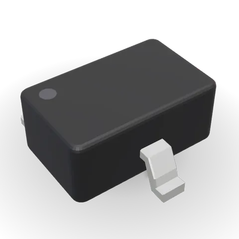
P 通道 MOSFET P-channel MOSFET
P-CH SOT-323 Mosfet
P 通道 MOSFET P-channel MOSFET
P-CH Mosfet SOT-23
P 通道 MOSFET P-channel MOSFET
20V P-CH Mosfet · SOT-23
P 通道 MOSFET P-channel MOSFET
30V P Mosfet SOT-23
P 通道 MOSFET P-channel MOSFET
P-CH SOP-8 Mosfet
P 通道 MOSFET P-channel MOSFET
20V P-CH SOT-23 Mosfet
P 通道 MOSFET P-channel MOSFET
20V SOT-23 P-CH Mosfet
P 通道 MOSFET P-channel MOSFET
60V SOT-23 P-CH Mosfet
P 通道 MOSFET P-channel MOSFET
P-CH SOT23 Mosfet
P 通道 MOSFET P-channel MOSFET
P-CH SOT-23 Mosfet
P 通道 MOSFET P-channel MOSFET
-20V SOT-23 P-CH Mosfet
P 通道 MOSFET P-channel MOSFET
30V SOP-8 P-CH Mosfet
P 通道 MOSFET P-channel MOSFET
20V SOT-323 P-CH Mosfet
雙 N 通道 MOSFET Dual N-channel MOSFET
N/N SOP8 Mosfet
雙 N 通道 MOSFET Dual N-channel MOSFET
Dual N-CH SOP-8 Mosfet
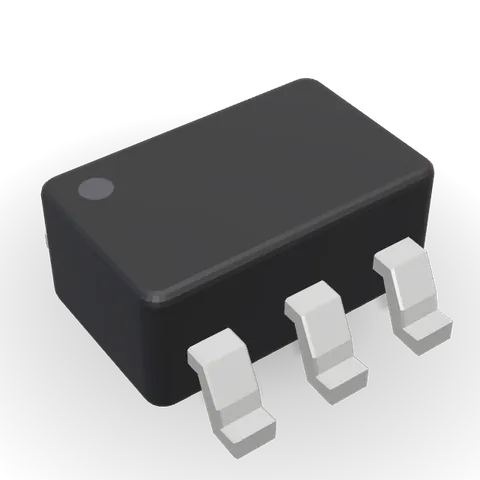
雙 P 通道 MOSFET Dual P-channel MOSFET
Dual P-CH SOT-363 Mosfet
雙 P 通道 MOSFET Dual P-channel MOSFET
Dual P-CH TSOP-6 Mosfet
N+P 通道 MOSFET Complementary MOSFET
N+P CH SOT-26 Mosfet
N+P 通道 MOSFET Complementary MOSFET
N+P TSOP-6 Mosfet
N+P 通道 MOSFET Complementary MOSFET
20V N+P Mosfet · TSOP-6
NPN 電晶體 NPN transistor
NPN 40V 200mA Transistor · SOT-23
NPN 電晶體 NPN transistor
NPN Transistor SOT-323
NPN 電晶體 NPN transistor
NPN 50V 4A SOT-23 Transistor
NPN 電晶體 NPN transistor
SOT-23 SMD Transistor
PNP 電晶體 PNP transistor
PNP 40V 200mA Transistor · SOT-23
PNP 電晶體 PNP transistor
PNP -50V -3A SOT-23 Transistor
PNP 電晶體 PNP transistor
SOT-23 Transistor
PNP 電晶體 PNP transistor
PNP Transistor SOT-23
PNP 電晶體 PNP transistor
PNP TRANSISTOR -400V SOT-23
雙電晶體 Dual transistor
Dual Transistor SOT-363
雙電晶體 Dual transistor
Dual PNP SOT-363 Transistor
雙電晶體 Dual transistor
Dual Transistors PNP SOT-363
N 通道 JFET N-channel JFET
N-CH JFET SOT-23
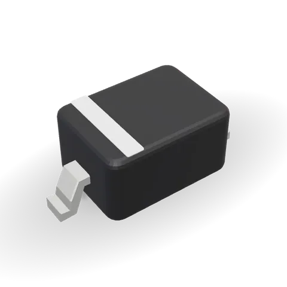
蕭特基二極體 Schottky diode
Schottky Diode SOD323
蕭特基二極體 Schottky diode
Schottky Diode SOT-23
蕭特基二極體 Schottky diode
Schottky Diode 30V 200mA SOD323
蕭特基二極體 Schottky diode
1A 30V SOD323 Schottky
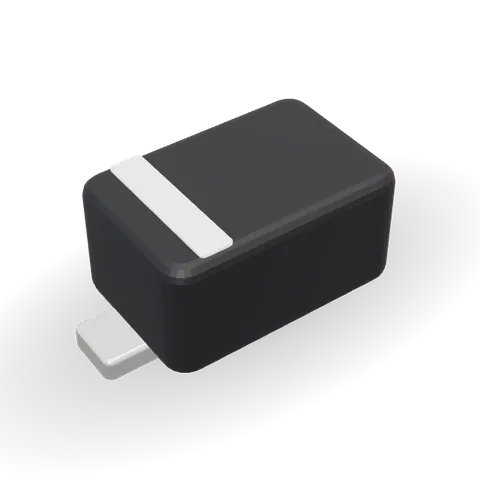
蕭特基二極體 Schottky diode
30V 1A SOD523 SCHOTTKY BARRIER
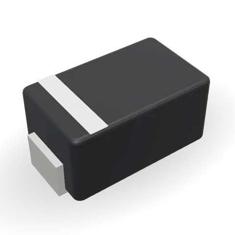
蕭特基二極體 Schottky diode
1A 40V SMA Schottky Diode
蕭特基二極體 Schottky diode
1A 60V SMA Schottky Diode
蕭特基二極體 Schottky diode
200V 2A SMA Schottky Diode
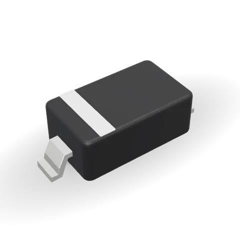
蕭特基二極體 Schottky diode
1A SMD SOD123 Schottky Diode
蕭特基二極體 Schottky diode
20A 45V TO-263
蕭特基二極體 Schottky diode
1A 20V SOD-123 Diode
蕭特基二極體 Schottky diode
1A 40V SMA
蕭特基二極體 Schottky diode
40V 2A DIODE SMA

蕭特基二極體 Schottky diode
1A 20V Schottky · SMD
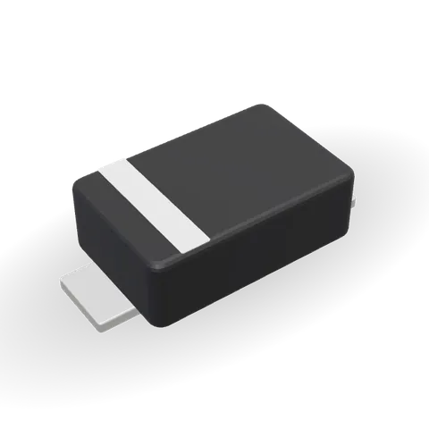
整流二極體 Rectifier diode
700V 1A SOD-123FL
貼片二極體 SMD diode
400 V · 1 A · SMD
整流二極體 Rectifier diode
400V 1A SMA RECTIFIER
整流二極體 Rectifier diode
100V/3A DO-314AC · SMA (DO-214AC)
整流二極體 Rectifier diode
1000V 1A SMA Diode
整流二極體 Rectifier diode
Rectifier SMA
開關二極體 Switching diode
Switch Diode SOT-23
ESD 保護二極體 ESD protection
ESD 5V 250mA SOD-523
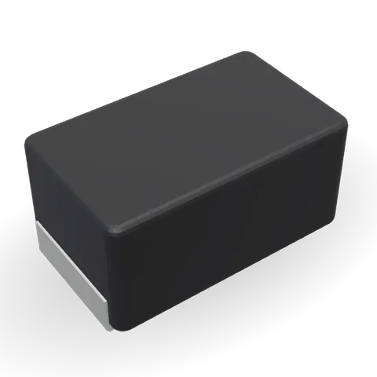
ESD 保護二極體 ESD protection
ESD Protection Diode TSLP-2
ESD 保護二極體 ESD protection
5V Ultra Low Capacitance ESD · DFN1006-2
TVS 二極體 TVS diode
58V TVS SOD-123
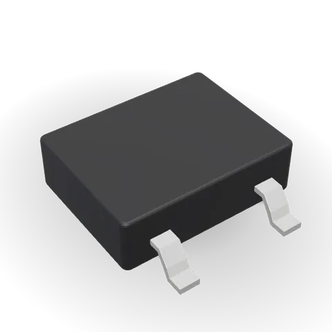
橋式整流器 Bridge rectifier
1A DB-1S SMD Rectifiers · DB-S
橋式整流器 Bridge rectifier
2A 50V SMD Bridge · DB-S
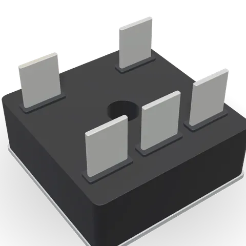
三相橋式整流器 3-phase bridge rectifier
35A 1600V 3 Phase Bridge Rectifiers · 三相模組

功率電感 Power inductor
IND. POWER 1uH · 2.5×2.0×1.2 mm
功率電感 Power inductor
IND. PWR 0.24uH · 2.5×2.0×1.2 mm
功率電感 Power inductor
IND.Power 1uH 3A · 2.5×2.0×1.2 mm
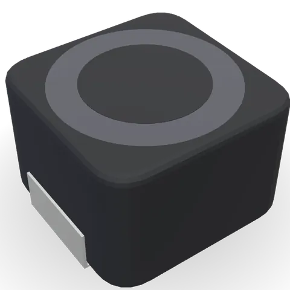
功率電感 Power inductor
2.2uH 3.1A · 3×3×2 mm
功率電感 Power inductor
4.7uH 3*3*2 mm Choke
功率電感 Power inductor
10uH 1.2A · 3×3×2 mm
功率電感 Power inductor
22uH 3.5*3.0*2.1 mm 0.5A · 3×3×2 mm
功率電感 Power inductor
33uH 3.5*3.0*2.1 mm 0.45A · 3×3×2 mm
功率電感 Power inductor
2.2uH 2.3A Choke · 3×3×2 mm
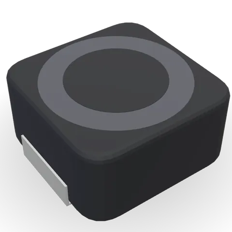
功率電感 Power inductor
10uH 1A · 3×3×1.5 mm
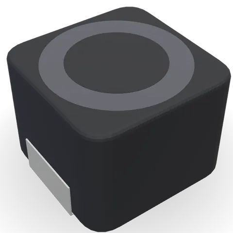
功率電感 Power inductor
2.2uH 4A · 4×4×3 mm
功率電感 Power inductor
3.3uH 2.7A · 4×4×3 mm
功率電感 Power inductor
6.8uH Choke · 4×4×3 mm
功率電感 Power inductor
18uH 10% Choke · 4×4×3 mm
功率電感 Power inductor
47uH Choke · 4×4×3 mm
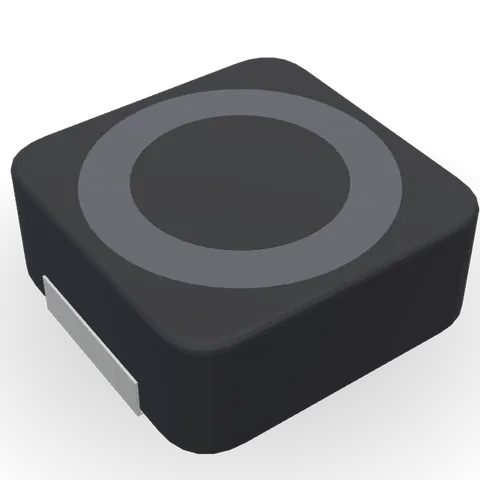
功率電感 Power inductor
4.7uH Choke · 5×5×2 mm
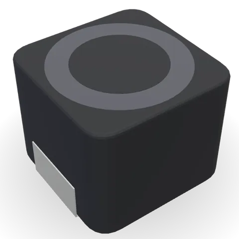
功率電感 Power inductor
3.3uH Choke · 5×5×4 mm
功率電感 Power inductor
3.2A 4.7uH · 5×5×4 mm
功率電感 Power inductor
10uH Choke · 5×5×4 mm
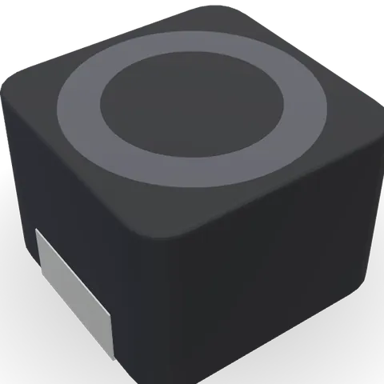
功率電感 Power inductor
10uH Choke · 7×7×5 mm
功率電感 Power inductor
100 uH Choke · 7×7×5 mm
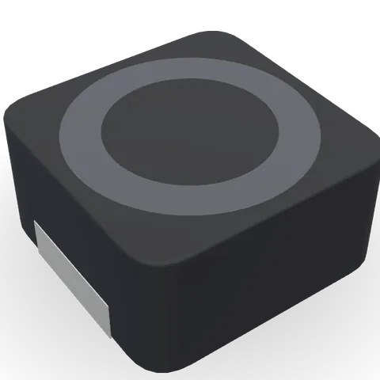
功率電感 Power inductor
33uH 3.1A · 10×10×5 mm
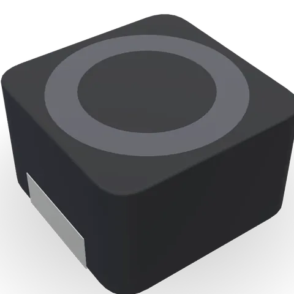
功率電感 Power inductor
10*9*6.5mm 7A 15uH · 10×10×6 mm
功率電感 Power inductor
33uH Choke · 10×10×6 mm
功率電感 Power inductor
2.2uH Choke · 3×3×1.5 mm
功率電感 Power inductor
3.3uH Choke · 3×3×1.5 mm
功率電感 Power inductor
22uH Choke · 3×3×1.5 mm
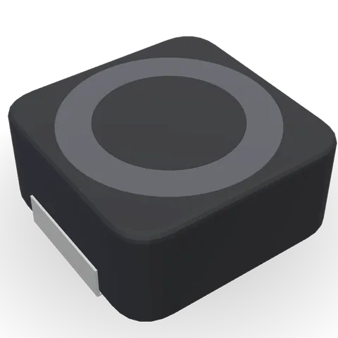
功率電感 Power inductor
4.7uH Choke · 4×4×1.8 mm
功率電感 Power inductor
220uH 0.9A · 4×4×1.8 mm
功率電感 Power inductor
IND. PWR 2.2uH 3A · 4×4×3 mm
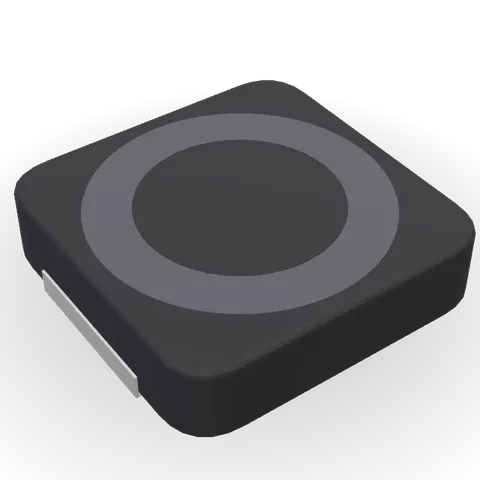
功率電感 Power inductor
2.2uH Choke · 5×5×1.2 mm
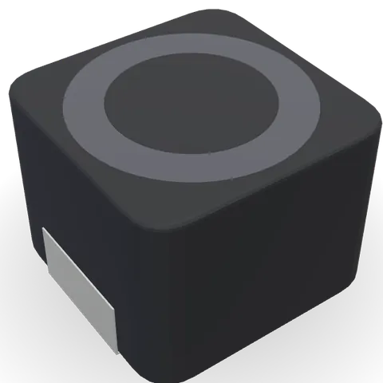
功率電感 Power inductor
47uH 1.75A Choke · 6×6×4.5 mm
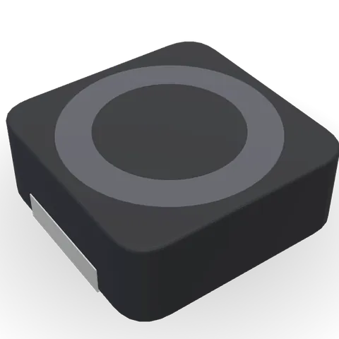
功率電感 Power inductor
10uH Choke · 8×8×3 mm
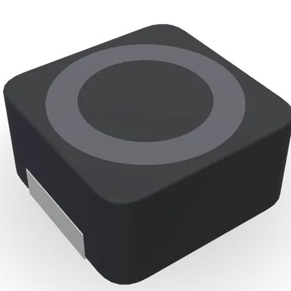
功率電感 Power inductor
10uH 3.8A · 8×8×4 mm
功率電感 Power inductor
22uH 2.2A · 8×8×4 mm
功率電感 Power inductor
100uH 1A · 8×8×4 mm
功率電感 Power inductor
68uH 1.2A · 8×8×4 mm
功率電感 Power inductor
1.0uH Choke · 2.5×2.0×1.2 mm
功率電感 Power inductor
2.2uH Choke · 2.5×2.0×1.2 mm
功率電感 Power inductor
4.7uH Choke · 2.5×2.0×1.2 mm
功率電感 Power inductor
10uH Choke · 2.5×2.0×1.2 mm
功率電感 Power inductor
4.7uH 4.4A · 6×6×4.5 mm
功率電感 Power inductor
6.8uH Choke · 4×4×3 mm
功率電感 Power inductor
3.3uH Choke · 5×5×4 mm
功率電感 Power inductor
3.2A 4.7uH · 5×5×4 mm
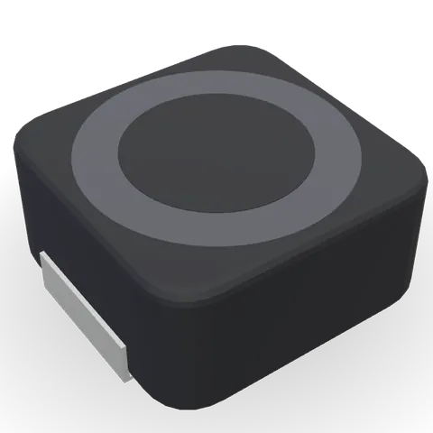
功率電感 Power inductor
10uH Choke · 2.5×2.5×1.2 mm
功率電感 Power inductor
2.2uH 4.9A IND. PWR · 4×4×3 mm
電感 Choke
1.0 µH · 2520
功率電感 Power inductor
2.2uH Choke · 2.5×2.0×1.2 mm
功率電感 Power inductor
10uH Choke · 2.5×2.0×1.2 mm
功率電感 Power inductor
2.2uH Choke · 2.5×2.0×1.2 mm
功率電感 Power inductor
IND. PWR 0.47 uH · 2.5×2.0×1.2 mm
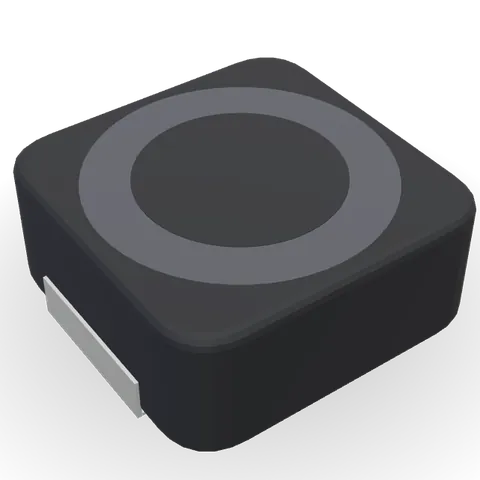
功率電感 Power inductor
47uH Choke · 約 3.6×3.6×1.5 mm
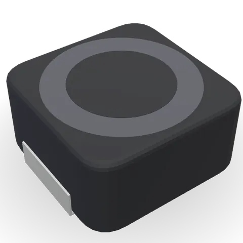
功率電感 Power inductor
3.3uH +-20% 1.5A 3.2*3.2*1.6
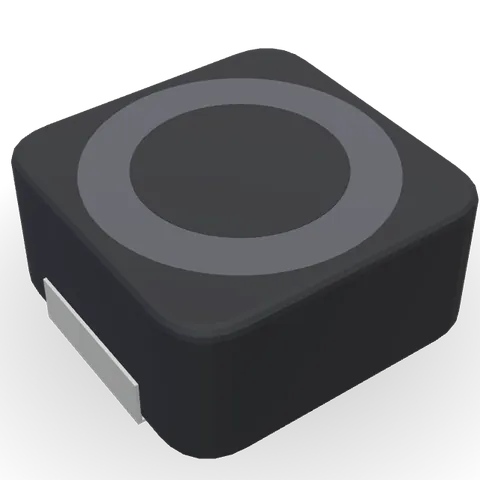
功率電感 Power inductor
10uH Choke · 約 3.8×3.8×1.8 mm
功率電感 Power inductor
10uH Choke · 2.5×2.0×1.2 mm
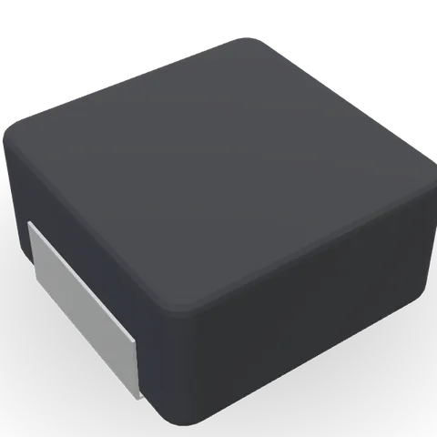
功率電感 Power inductor
IND PWR 1uH 8A · 約 4×4×2 mm
功率電感 Power inductor
IND. PWR 1.5uH 7A · 約 4×4×2 mm
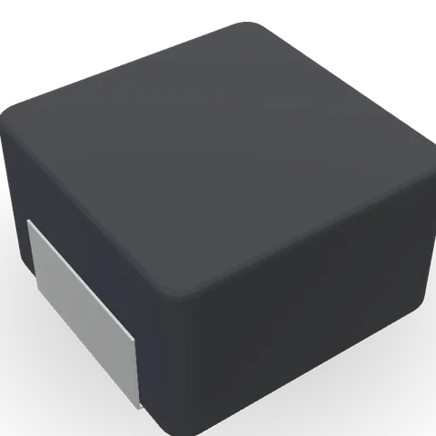
功率電感 Power inductor
IND PWR 1.5uH 10A · 約 5×5×3 mm
功率電感 Power inductor
IND. 1.5uH 18A · 約 6×6×3 mm
功率電感 Power inductor
IND. PWR 3.3uH 9.5A · 約 6×6×3 mm
功率電感 Power inductor
15uH 3A Choke · 約 6×6×3 mm
功率電感 Power inductor
22UH 3A Choke · 約 6×6×3 mm
功率電感 Power inductor
IND PWR 1.0uH 8A · 約 4×4×2 mm
功率電感 Power inductor
IND PWR 1.5uH 7A SMD · 約 4×4×2 mm
功率電感 Power inductor
IND. PWR 0.47uH · 2×1.6×1 mm
功率電感 Power inductor
IND POWER 1.0 uH · 約 5×5×3 mm
功率電感 Power inductor
IND. PWR 4.7uH 4.8A · 約 5×5×3 mm
功率電感 Power inductor
IND POWER 10uH · 約 6×6×3 mm
功率電感 Power inductor
G/IND 68uH 4.8A 13.5*12.6*6.2
功率電感 Power inductor
4.7uH Choke · 約 4×4×2 mm
功率電感 Power inductor
15uH Choke · 約 10×10×4 mm
功率電感 Power inductor
22uH Choke · 約 10×10×4 mm
功率電感 Power inductor
0.6uH IND. · 約 4×4×2 mm
功率電感 Power inductor
2.2uH Choke · 2.5×2.0×1.2 mm
功率電感 Power inductor
15uH Choke · 2.5×2.0×1.2 mm
功率電感 Power inductor
0.47uH Choke · 2.5×2.0×1.2 mm
功率電感 Power inductor
IND. PWR 1.0uH 11A · 約 5×5×3 mm
功率電感 Power inductor
1.5uH 10A IND. · 約 5×5×3 mm
功率電感 Power inductor
4.7uH IND. POWER · 約 5×5×3 mm
功率電感 Power inductor
1.5uH 18A IND. · 約 6×6×3 mm
功率電感 Power inductor
Power IND. 33uH 3A · 約 6×6×3 mm
晶片電感 Chip inductor
33uH 0805 Choke
晶片電感 Chip inductor
47uH Chip Inductor · 3225

磁珠 Chip bead
80 Ω · 3216 · 3 A
共模電感 Common-mode choke
1500 ohm Common Choke · SMD 共模
共模電感 Common-mode choke
Common mode 1000 ohm 2A · SMD 共模
共模電感 Common-mode choke
Common mode choke 1000 ohm 2A · 5×5.2×2.3 mm
插件電感 Radial inductor
0.21A 2.2mH · Ø6×8 mm 插件
插件電感 Radial inductor
220uH Choke · Ø8×10 mm 插件
插件電感 Radial inductor
33mH Choke · Ø8×10 mm 插件
插件電感 Radial inductor
5.6mH 0.45A Choke · Ø10×12 mm 插件
插件電感 Radial inductor
15uH 4.8A · Ø10×16 mm 插件
插件電感 Radial inductor
33uH 4.8A Choke · Ø10×16 mm 插件
插件電感 Radial inductor
1.9mH 1.2A · Ø10×20 mm 插件
插件電感 Radial inductor
3mH 2.8A · Ø10×20 mm 插件
插件電感 Radial inductor
5.6mH 0.6A · Ø10×20 mm 插件
色碼電感 Axial inductor
2.2mH 0.28A Choke · 軸向 Axial
貼片 LED SMD LED
0603 White LED
貼片 LED SMD LED
0402 YG LED
貼片 LED SMD LED
0603 Blue LED
貼片 LED SMD LED
0603 Red LED
貼片 LED SMD LED
0603 YG H=0.6mm LED
貼片 LED SMD LED
1206 RED LED
貼片 LED SMD LED
3020 White LED
貼片 LED SMD LED
0805 X 0.29 Y 0.29 White LED
貼片 LED SMD LED
0402 Blue LED
貼片 LED SMD LED
0402 Red LED
貼片 LED SMD LED
0603 RED LED
貼片 LED SMD LED
0603 Yellow LED
貼片 LED SMD LED
0603 Blue SMD LED
貼片 LED SMD LED
1206 RED SMD LED
貼片 LED SMD LED
1206 Green SMD LED
雙色 LED Bi-colour LED
0605 Red+YG LED
雙色 LED Bi-colour LED
0605 Green+Red LED
RGB LED RGB LED
Red+Green+Blue LED EIA STD · SMD RGB
紫外光 LED UV LED
0805 UV LED λp 395nm
反貼 LED Reverse-mount LED
1206 Reverse SMD Red LED (Bin Q+)
反貼 LED Reverse-mount LED
1206 Reverse SMD YG LED (Iv P / λd D+)
反貼 LED Reverse-mount LED
1206 Reverse Blue LED
側發光 LED Side-view LED
Side View Green LED
側發光 LED Side-view LED
3.8*0.6mm Red LED Vf 2.0-2.2V · Side-view 3.8×0.6
插件 LED DIP LED
3mm Blue DIP LED · Ø3 mm DIP
插件 LED DIP LED
3mm Super Blue DIP LED · Ø3 mm DIP
插件 LED DIP LED
3mm Blue DIP LED · Ø3 mm DIP
插件 LED DIP LED
3mm Round DIP Red LED · Ø3 mm DIP
插件 LED DIP LED
5mm DIP White LED · Ø5 mm DIP
插件 LED DIP LED
5mm R+G DIP LED · Ø5 mm DIP
插件 LED DIP LED
5mm Round White LED · Ø5 mm DIP
紅外線 LED IR LED
5mm IR DIP LED λp 940nm 45° · Ø5 mm DIP
LED 燈座組 LED with holder
3mm Orange DIP LED With Holder · Ø3 mm · 燈座
LED 燈座組 LED with holder
3mm DIP Green LED With Holder · Ø3 mm · 燈座
LED 燈座組 LED with holder
3mm RED LED With Holder · Ø3 mm · 燈座
LED 燈座組 LED with holder
3mm Red DIP LED With Holder · Ø3 mm · 燈座
LED 燈座組 LED with holder
3mm DIP A+G LED With Holder · Ø3 mm · 燈座
LED 燈座組 LED with holder
3mm DIP R+G LED With Holder · Ø3 mm · 燈座
LED 燈座組 LED with holder
3mm G / R DIP LED With Holder · Ø3 mm × 2 · 燈座
LED 燈座組 LED with holder
2 LED G/G With Holder · Ø3 mm × 2 · 燈座
LED 燈座組 LED with holder
2 DIP LED GB / GB With Holder · Ø3 mm × 2 · 燈座
LED 燈座組 LED with holder
3mm Round Green+Holder · Ø3 mm · 燈座
LED 燈座組 LED with holder
3 DIP RB/RB/G With Holder · Ø3 mm × 3 · 燈座
LED 燈座組 LED with holder
3 LED RG/RG/RG With Holder · Ø3 mm × 3 · 燈座
三層指示燈 Tri-level indicator
LED TRI-LEVEL R/Y/G 6P LF
七段顯示器 7-segment display
0.56" Single Digit Red Display
光耦合器 Photocoupler
Photocoupler DIP-4 A-Rank
光耦合器 Photocoupler
Photocoupler DIP-4 C-Rank
環境光感測器 Light sensor
23bit 1206 Light Sensor
自恢復保險絲 PPTC poly fuse
7A 16V Poly Fuse · 插件 Radial
自恢復保險絲 PPTC poly fuse
2.5A 33V Poly FUSE · 插件 Radial
自恢復保險絲 PPTC poly fuse
0.35A 1812 Poly Fuse
自恢復保險絲 PPTC poly fuse
1812 0.75A SMD Poly Fuse
自恢復保險絲 PPTC poly fuse
0805 1A Poly Fuse
自恢復保險絲 PPTC poly fuse
1.1A 1812 Poly FUSE
自恢復保險絲 PPTC poly fuse
8V 1812 1.5A Poly Fuse
自恢復保險絲 PPTC poly fuse
2A 1812 POLY FUSE
運算放大器 Op amp
Rail-to-Rail SOP-8 OP AMP.
運算放大器 Op amp
OP AMP. SOT-25
運算放大器 Op amp
OP AMP. SOP-14
運算放大器 Op amp
OP AMP. SOP-8
運算放大器 Op amp
Low Voltage SOT-25 OP AMP.
運算放大器 Op amp
TSSOP-14 OP AMP.
運算放大器 Op amp
OP AMP. SOP-14
比較器 Comparator
SOP-14 Comparator
比較器 Comparator
Voltage Comparator SOT-25
比較器 Comparator
Dual-CH SOP-8 Power AMP.
D 類音訊放大器 Class-D audio amp
3W Class D Audio AMP. TDFN-8
電壓基準 Voltage reference
Vref 2.5V SOT-23
電壓基準 Voltage reference
Vref 2.5V 1% SOT-23
電壓基準 Voltage reference
Vref 2.5V SOT-23
電壓基準 Voltage reference
Vref 1.24V SOT-23
並聯穩壓器 Shunt regulator
Adjustable Shunt Regulator SOT-23
EEPROM 記憶體 EEPROM
256*8 bit EEPROM SOP-8
EEPROM 記憶體 EEPROM
64KB EEPROM SOP-8
沒有符合的料號，請嘗試其他關鍵字。
同樣標示 10 kΩ 的電阻，在功率、公差、溫度特性與封裝上仍可能不同。選料前應對照實際電路條件與製造商文件。
以 Ω、kΩ、MΩ 表示名目阻值。
所需阻值及允許範圍說明實際阻值相對標示值的容許偏差。
例如 ±1%、±5%，依需求為準允許耗散功率與散熱、環境溫度等條件有關。
功率需求與工作環境反映阻值隨溫度改變的程度。
精度要求與溫度條件貼片尺寸、引腳形式會影響裝配相容性。
尺寸／封裝碼／安裝方式色環電阻選擇顏色、貼片電阻輸入本體標示，立即換算名目阻值，方便整理詢價資料。
換算結果為名目阻值，僅供判讀參考；實際規格請以製造商文件與實物標示為準。
「電焊相關零件」可能涉及不同用途。若無法確認具體品項，應先提供應用位置與規格，不直接以相似名稱判定可替代。
零件安裝在哪個設備、組件或製程環節？
如適用，列出額定電壓、電流及工作條件。
外形尺寸、接點形式、材質與連接介面。
既有料號、標籤、規格書或清晰的尺寸說明。
進行料件比對時，建議以製造商最新有效文件為依據。只看產品照片、簡稱或單一數值，往往不足以確認替代適用性。
拖曳放大鏡看看圖面角落的註記：腳位、尺寸、裸露焊墊（EP）與備註，往往才是判斷能否替代的關鍵。
型號相近不一定代表電氣、熱學或機械條件相容；涉及安全與設備可靠性的用途，應由具備相應專業的人員確認。
逐項確認手邊的資料，勾選完畢就能帶著完整內容開始詢價。